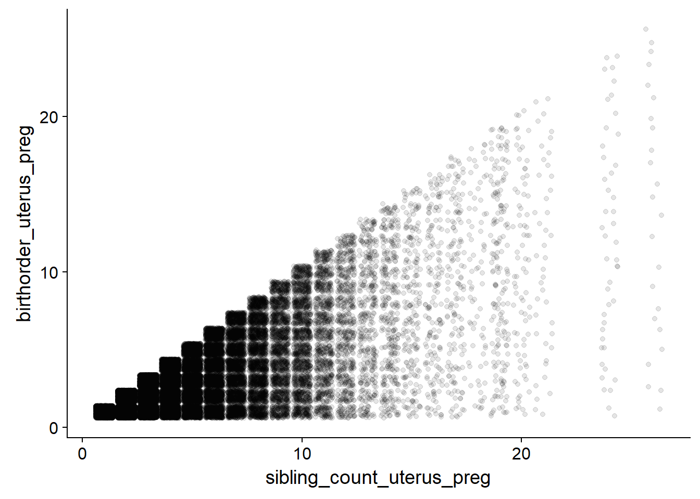
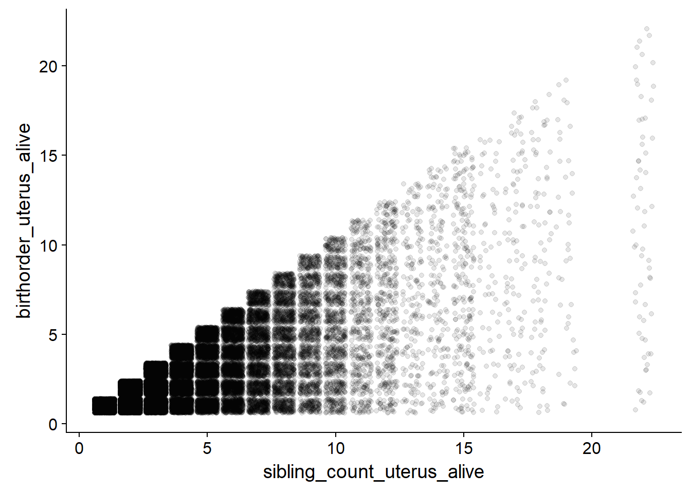
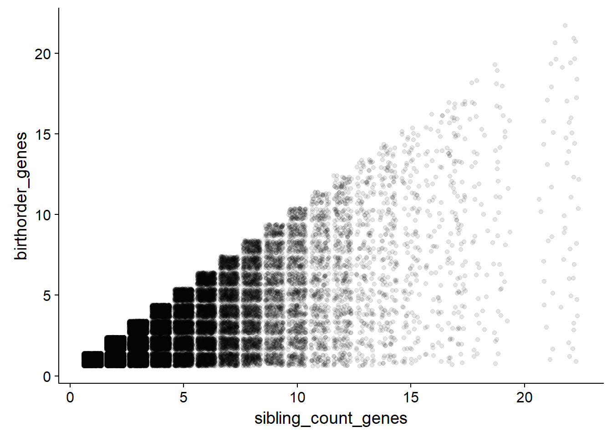

Data import
Library
library(formr)
library(devtools)
library(haven)
# devtools::install_github("hadley/haven")
library(plyr)
library(tidyr)
library(ggplot2)
library(stringr)
library(dplyr)##
## Attaching package: 'dplyr'## The following objects are masked from 'package:plyr':
##
## arrange, count, desc, failwith, id, mutate, rename, summarise,
## summarize## The following objects are masked from 'package:formr':
##
## first, last## The following objects are masked from 'package:stats':
##
## filter, lag## The following objects are masked from 'package:base':
##
## intersect, setdiff, setequal, unionHelper
all_available_info_birth_date = function(byear, bmonth, bday = NULL) {
if(!is.null(bday)) {
bday = paste0("-", bday)
} else {
bday = ""
}
ifelse(is.na(byear), NA,
paste0(byear, "-", bmonth, bday))
# can yield 2016-NA-NA
# 2016-01-NA
# 2016-01-01
# 2016-01
}
#' ##### only older sibs
older_sibs_alive_and_dependent = function(byear, dyear) {
sibs = length(byear)
older_sibs_alive_and_dependent = integer(length=sibs)
for(i in 1:sibs) {
older_sibs = byear <= byear[i] # not using < because of twins
older_sibs[i] = F # minus self
my_sibs = sum(older_sibs,na.rm = T) # minus self
if(my_sibs > 0) {
sib_births = byear[ which(older_sibs) ]
sib_deaths = dyear[ which(older_sibs) ]
my_sibs = my_sibs -
sum(
# sib_births < (byear[i] - 5) | # others born more than 5y earlier than me # 10 seconds of 17
(sib_deaths <= byear[i]) # died before my birth
,na.rm=T)
older_sibs_alive_and_dependent[i] = my_sibs
}
}
older_sibs_alive_and_dependent
}Load data
### Individual and household Information
## Informations about individuals living in the household in 2014/2015
# Individuals living in the household
bk_ar1 = read_dta("data/hh14_all_dta/bk_ar1.dta")
# Additional information from mothers
b4_ba6 = read_dta("data/hh14_all_dta/b4_ba6.dta")
# compute father pidlink
bk_ar1 = left_join(bk_ar1, bk_ar1 %>% select(hhid14_9, pid14, pidlink) %>% rename(ar10 = pid14, father_pidlink = pidlink), by = c("hhid14_9", "ar10"))
# compute mother pidlink
bk_ar1 = left_join(bk_ar1, bk_ar1 %>% select(hhid14_9, pid14, pidlink) %>% rename(ar11 = pid14, mother_pidlink = pidlink), by = c("hhid14_9", "ar11"))
### Informations about earlier waves
ptrack = read_dta("data/hh14_all_dta/ptrack.dta")
### IQ Information
ek_ek2 = read_dta("data/hh14_all_dta/ek_ek2.dta") # over 15yo
ek_time2 = read_dta("data/hh14_all_dta/ek_time2.dta")
# additional information (counting backwards, adaptive testing) for adults
b3b_cob = read_dta("data/hh14_all_dta/b3b_cob.dta") # over 15yo
b3b_co1 = read_dta("data/hh14_all_dta/b3b_co1.dta") # over 15yo
### Personality Information (only for adults)
b3b_psn = read_dta("data/hh14_all_dta/b3b_psn.dta") # over 15yo
### Risk taking
b3a_si = read_dta("data/hh14_all_dta/b3a_si.dta")Select individual data
### Individuals
individuals = bk_ar1 %>% select(hhid14_9, pidlink, father_pidlink, mother_pidlink, ar01a, ar02b, ar10, ar11, ar07, ar08day, ar08mth, ar08yr, ar09, ar18h)
#Rename variables to make it easier
individuals <- rename(individuals, relation_to_HH_head = ar02b, fatherID = ar10, motherID = ar11, sex = ar07, age = ar09, alive = ar18h, status = ar01a)
# Remove duplicats:
table(duplicated(individuals$pidlink))##
## FALSE TRUE
## 75680 13702individuals <- individuals %>% distinct(pidlink, .keep_all = TRUE)
## people whose parents can not be identified have to be marked as NA:
individuals$fatherID[ individuals$fatherID>50] = NA
individuals$motherID[ individuals$motherID>50] = NA
##create number that should be identical for all siblings in one family
individuals <- unite(individuals,
col = "hhid14_9_fatherID_motherID",
hhid14_9, fatherID, motherID,
sep = "_",
remove = FALSE)
individuals$hhid14_9_fatherID_motherID = ifelse(is.na(individuals$fatherID), NA, individuals$hhid14_9_fatherID_motherID)
individuals$hhid14_9_fatherID_motherID = ifelse(is.na(individuals$motherID), NA, individuals$hhid14_9_fatherID_motherID)
individuals = individuals %>% mutate(
mother_father_dyad = stringr::str_c(father_pidlink, mother_pidlink)
)
crosstabs( ~ is.na(mother_father_dyad) + is.na(hhid14_9_fatherID_motherID), data = individuals)## is.na(hhid14_9_fatherID_motherID)
## is.na(mother_father_dyad) FALSE TRUE
## FALSE 35649 0
## TRUE 0 40031n_distinct(individuals$mother_father_dyad)## [1] 15622n_distinct(individuals$hhid14_9_fatherID_motherID)## [1] 16242##calculate sibling size
individuals = individuals %>%
group_by(mother_father_dyad) %>%
mutate(siblingcount = n())
individuals$siblingcount = ifelse(is.na(individuals$fatherID), NA, individuals$siblingcount)
individuals$siblingcount = ifelse(is.na(individuals$motherID), NA, individuals$siblingcount)
qplot(individuals$siblingcount)## `stat_bin()` using `bins = 30`. Pick better value with `binwidth`.## Warning: Removed 40031 rows containing non-finite values (stat_bin).
##calculate birth order
# create date of birth
individuals$ar08day[ individuals$ar08day>31] = NA
individuals$ar08mth[ individuals$ar08mth>12] = NA
individuals$ar08yr[ individuals$ar08yr>2016] = NA
individuals$ar08day[ is.nan(individuals$ar08day) ] = NA
individuals$ar08mth[ is.nan(individuals$ar08mth) ] = NA
individuals$ar08yr[ is.nan(individuals$ar08yr)] = NA
individuals = individuals %>%
mutate(birth =
ifelse(is.na(ar08yr), NA,
paste0(ar08yr, "-", ar08mth, "-", ar08day)
)
) %>%
group_by(mother_father_dyad) %>%
mutate(birthorder = min_rank(birth)) %>%
group_by(mother_father_dyad, birth) %>%
mutate(multiple_birth = n()) %>%
group_by(mother_father_dyad) %>%
mutate(any_multiple_birth_in_fam = any(multiple_birth > 1))
individuals$birthorder = ifelse(is.na(individuals$mother_father_dyad), NA, individuals$birthorder)
individuals$multiple_birth = ifelse(is.na(individuals$mother_father_dyad), NA, individuals$multiple_birth)
individuals$any_multiple_birth_in_fam = ifelse(is.na(individuals$mother_father_dyad), NA, individuals$any_multiple_birth_in_fam)
crosstabs(individuals$birthorder)## individuals$birthorder
## 1 2 3 4 5 6 7 8 9 10 11 <NA>
## 15674 10429 5215 2432 1047 488 204 85 35 12 3 40056crosstabs(individuals$multiple_birth)## individuals$multiple_birth
## 1 2 3 4 <NA>
## 35310 326 9 4 40031crosstabs(individuals[!duplicated(individuals$mother_father_dyad), ]$any_multiple_birth_in_fam)## individuals[!duplicated(individuals$mother_father_dyad), ]$any_multiple_birth_in_fam
## FALSE TRUE <NA>
## 15456 165 1# only few individuals with missing byears
crosstabs(~ is.na(ar08yr) + is.na(age), data = individuals)## is.na(age)
## is.na(ar08yr) FALSE TRUE
## FALSE 69027 0
## TRUE 255 6398qplot(individuals$birthorder)## `stat_bin()` using `bins = 30`. Pick better value with `binwidth`.## Warning: Removed 40056 rows containing non-finite values (stat_bin).
Compare with mother information
motherinformations = b4_ba6 %>% select(hhid14_9, pidlink, ba63cx, ba64, ba64bmt, ba64byr, ba64c, ba65, ba65mt, ba65ayr, ba66, ba63n)
#Rename variables to make it easier
motherinformations <- rename(motherinformations, biologicalchild_m = ba63cx, sex_m = ba64, birth_month_m = ba64bmt, birth_year_m = ba64byr, living_in_HH_m = ba64c, alive_m = ba65, death_month_m = ba65mt, death_year_m = ba65ayr, death_age_m = ba66,total_number_childs_m = ba63n, mother_pidlink = pidlink)
# Mothercheck
individuals$mother_reported_on_other_sibs = ifelse(individuals$mother_pidlink %in% motherinformations$mother_pidlink, 1, 0)
crosstabs(individuals$mother_reported_on_other_sibs)## individuals$mother_reported_on_other_sibs
## 0 1
## 58127 17553motherinformations$birth_year_m = (ifelse(motherinformations$birth_year_m<2016, motherinformations$birth_year_m, NA))
motherinformations$birth_month_m = (ifelse(motherinformations$birth_month_m<13, motherinformations$birth_month_m, NA))
motherinformations$death_year_m = (ifelse(motherinformations$death_year_m<2016, motherinformations$death_year_m, NA))
motherinformations$death_month_m = (ifelse(motherinformations$death_month_m<13, motherinformations$death_month_m, NA))
missingness_patterns(motherinformations %>% select(mother_pidlink, birth_year_m, birth_month_m))## index col missings
## 1 birth_month_m 2716
## 2 birth_year_m 1855## Pattern Freq Culprit
## 1 ___ 15901 _
## 2 1_2 1853
## 3 1__ 863 birth_month_m
## 4 __2 2 birth_year_mmotherinformations = motherinformations %>%
mutate(mother_birthdate = str_c(mother_pidlink,
all_available_info_birth_date(birth_year_m, birth_month_m) ))
# remove all with unknown mothers/unknown birthmonths
motherinformations = motherinformations %>%
filter(!is.na(mother_birthdate))
individuals = individuals %>%
mutate(mother_birthdate = str_c(mother_pidlink,
all_available_info_birth_date(ar08yr, ar08mth) ))
# remove all with unknown mothers/unknown birthmonths
crosstabs(~ is.na(mother_birthdate) + mother_reported_on_other_sibs, data = individuals)## mother_reported_on_other_sibs
## is.na(mother_birthdate) 0 1
## FALSE 23913 17552
## TRUE 34214 1individuals = individuals %>%
filter(!is.na(mother_birthdate), mother_reported_on_other_sibs == 1)
# overlap between individuals and motherinfo
length(intersect(individuals$mother_birthdate, motherinformations$mother_birthdate))## [1] 13858ind_mbd = na.omit(individuals$mother_birthdate)
ind_dupes = unique(ind_mbd[duplicated(ind_mbd)])
length(ind_dupes)## [1] 91minfo_mbd = na.omit(motherinformations$mother_birthdate)
minfo_dupes = unique(minfo_mbd[duplicated(minfo_mbd)])
length(minfo_dupes)## [1] 137# overlap between duplicates in ind and minfo
intersect(minfo_dupes, ind_dupes)## [1] "0032000031997-5" "0050300022007-8" "0072500021999-11"
## [4] "0081500021991-7" "0102700021999-6" "0112700032010-9"
## [7] "0161300141999-5" "0211841022001-9" "0250700042007-2"
## [10] "0332300092007-9" "0341541022011-6" "0350100021991-6"
## [13] "0481631021998-8" "0482200021987-2" "0501700021982-12"
## [16] "0511400021987-6" "0552000061999-1" "0552012021996-1"
## [19] "0620100022002-9" "0680511022006-2" "0680600021987-11"
## [22] "0784400022000-3" "0910600082002-9" "0990800042007-5"
## [25] "1040100021987-1" "1051800021995-5" "1130200042003-8"
## [28] "1130600082004-8" "1141600052008-4" "1221900032007-10"
## [31] "1320600021992-7" "1391000062005-8" "1440500021991-9"
## [34] "1452500062004-5" "1651500021992-9" "1672500041990-6"
## [37] "1682600021992-4" "1700700031998-3" "1721500102005-10"
## [40] "1732500021981-6" "1732900052007-4" "1761000032009-8"
## [43] "1780100031999-3" "1861000031985-9" "1891341022007-7"
## [46] "1960700051990-11" "1971300062008-1" "2111300021985-8"
## [49] "2191800032005-4" "2261800022004-1" "2340500021990-2"
## [52] "2380200021996-8" "2461332022005-2" "2501300032003-8"
## [55] "2521641022009-11" "2711900032005-1" "2720800021998-5"
## [58] "2740200021984-7" "2740800021990-5" "2741700022001-1"
## [61] "2761900022003-8" "2771200072005-8" "2792100022003-1"
## [64] "2830500021987-8" "2851500022005-1" "2871900022004-8"
## [67] "2880100021995-6" "2921431022003-2" "2951100022000-12"
## [70] "2971031021997-11" "3031600021996-9" "3051300021994-7"
## [73] "3060332022005-4" "3071631032005-6" "3090600052006-7"
## [76] "3152900021983-3" "3154100082000-7"# suboptimal solution: because twins and triplets are not uniquely identified in the motherinformations file. We're using the mother informations file mainly to get sibs MISSING from the indidivuals file, so this is not a big deal. We also get death dates > 12m ago from the minfo file, but individuals who died >12m ago are not in the individuals file.
motherinformations = motherinformations %>% filter(! mother_birthdate %in% intersect(minfo_dupes, ind_dupes))
length(union(motherinformations$mother_birthdate, individuals$mother_birthdate)) # expected size of parentscheck minus twins## [1] 20227parentscheck = full_join(individuals, motherinformations, by = "mother_birthdate")
nrow(parentscheck)## [1] 20380parentscheck = parentscheck %>% aggregate2sources("mother_pidlink", "mother_pidlink.x", "mother_pidlink.y")## 2779 fewer missingsparentscheck = parentscheck %>%
filter(!is.na(mother_birthdate), !is.na(mother_pidlink))
bk_ar1$ar18h = as.numeric(as.character(bk_ar1$ar18h))
bk_ar1$ar18h[is.nan(bk_ar1$ar18h)] = NA
crosstabs(~ ar01a + ar18h, data = bk_ar1)## ar18h
## ar01a 1 3 8 9 <NA>
## 0 0 0 0 0 6438
## 1 0 0 0 0 33924
## 2 0 0 0 0 7480
## 3 23864 20 489 11 0
## 5 0 0 0 0 16853
## 6 0 0 0 0 248
## 11 0 0 0 0 55crosstabs(~ bk_ar1$ar01a)## bk_ar1$ar01a
## 0 1 2 3 5 6 11
## 6438 33924 7480 24384 16853 248 55crosstabs(parentscheck$alive_m + parentscheck$status) # almost no one died in last12m?## parentscheck$status
## parentscheck$alive_m 1 2 3 5 11 <NA>
## 1 143 45 4100 0 17 1612
## 3 1 3 4 0 0 386
## 8 0 0 1 0 0 1
## <NA> 792 73 753 2140 7 0
## NaN 7758 444 858 459 3 780### Social Birthorder - siblings by the time of birth
parentscheck$alive_m = ifelse(is.na(parentscheck$alive_m), 1, parentscheck$alive_m)
qplot(parentscheck$alive_m)## `stat_bin()` using `bins = 30`. Pick better value with `binwidth`.
qplot(parentscheck$death_age_m, binwidth=1)## Warning: Removed 14077 rows containing non-finite values (stat_bin).
# all who're dead in our subset have their death date in minfo
parentscheck = parentscheck %>% mutate(
death_year_m_agg = ifelse(is.na(death_year_m), birth_year_m + death_age_m, death_year_m),
death_date = all_available_info_birth_date(death_year_m_agg, death_month_m))
### Biological Birthorder: Order in Uterus
# only include biological childs
parentscheck$biologicalchild_m = ifelse(
is.na(parentscheck$biologicalchild_m), 1, # those who don't have this var are from the individuals file and are biological kids
parentscheck$biologicalchild_m) # the ones from the minfo file can have a zero here (be adopted)
parentscheck = parentscheck %>%
mutate(birth_ind = all_available_info_birth_date(ar08yr, ar08mth, ar08day),
birth_minfo = all_available_info_birth_date(birth_year_m, birth_month_m)) %>%
aggregate2sources("birth", "birth_ind", "birth_minfo")## Warning in aggregate2sources(., "birth", "birth_ind", "birth_minfo"):
## birth already exists. Maybe delete it or choose a different name, if you're
## saving over your original dataframe.## 2779 fewer missingsparentscheck = parentscheck %>%
group_by(mother_pidlink) %>%
mutate(
birth_bio = ifelse(biologicalchild_m == 1, birth, NA),
birthorder_uterus = min_rank(birth_bio),
siblingcount_maternal = sum(biologicalchild_m == 1),
born_lived_5y = ifelse(death_age_m <= 5, NA, birth),
birthorder_min5y = min_rank(born_lived_5y),
siblingcount_min5y = sum(is.na(born_lived_5y)),
birthorder_alive = older_sibs_alive_and_dependent(as.numeric(str_sub(birth, 1, 4)), death_year_m)
) %>%
group_by(mother_pidlink, birth) %>% # adopt
mutate(multiple_birth = sum(biologicalchild_m == 1)) %>%
group_by(mother_pidlink) %>%
mutate(any_multiple_birth_in_fam = any(multiple_birth > 1))
ggplot(parentscheck, aes(x=siblingcount_maternal, y=birthorder_uterus)) + geom_jitter()## Warning: Removed 832 rows containing missing values (geom_point).
ggplot(parentscheck, aes(x=siblingcount_maternal, y=birthorder_uterus)) + geom_jitter()## Warning: Removed 832 rows containing missing values (geom_point).
# how to compute social birth order
# count only those who're alive at own time of birth?
# count only those who survived their own infancy?
crosstabs(parentscheck$birthorder_min5y)## parentscheck$birthorder_min5y
## 1 2 3 4 5 6 7 8 9 <NA>
## 2935 1644 819 390 182 74 35 16 5 14280qplot(parentscheck$birthorder_min5y, parentscheck$birthorder_uterus, geom = 'jitter')## Warning: Removed 14995 rows containing missing values (geom_point).
crosstabs(~ birthorder_min5y + birthorder_uterus, data = parentscheck)## birthorder_uterus
## birthorder_min5y 1 2 3 4 5 6 7 8 9 10 11
## 1 2130 399 73 16 1 2 2 0 0 0 0
## 2 68 973 316 80 20 5 0 0 0 0 0
## 3 26 43 402 167 55 18 5 2 2 1 0
## 4 16 19 20 156 77 27 14 2 4 1 0
## 5 9 6 5 11 56 35 16 8 2 1 1
## 6 1 9 3 1 3 21 6 6 3 1 0
## 7 2 1 8 2 0 1 5 5 1 2 0
## 8 0 2 1 2 0 0 0 3 1 0 1
## 9 0 0 0 0 1 0 0 0 1 0 0
## <NA> 4337 4424 2656 1333 672 359 186 96 49 26 14
## birthorder_uterus
## birthorder_min5y 12 13 14 <NA>
## 1 0 0 0 312
## 2 0 0 0 182
## 3 0 0 0 98
## 4 0 0 0 54
## 5 0 0 0 32
## 6 0 0 0 20
## 7 0 0 0 8
## 8 0 0 0 6
## 9 0 0 0 3
## <NA> 7 2 2 117crosstabs(~ birthorder_alive + birthorder_uterus, data = parentscheck)## birthorder_uterus
## birthorder_alive 1 2 3 4 5 6 7 8 9 10 11
## 0 6014 45 2 0 0 0 0 0 0 0 0
## 1 437 5372 72 6 0 0 0 0 0 0 0
## 2 69 327 3064 47 6 0 0 0 0 0 0
## 3 40 73 248 1514 28 3 1 0 0 0 0
## 4 20 27 42 149 731 20 1 1 0 0 0
## 5 6 18 25 21 104 384 11 0 0 0 0
## 6 2 11 19 13 5 51 190 10 0 0 0
## 7 1 1 9 9 4 5 27 98 5 0 0
## 8 0 2 1 5 4 2 3 9 50 1 0
## 9 0 0 1 2 2 2 0 4 7 24 0
## 10 0 0 0 1 0 0 0 0 0 7 15
## 11 0 0 1 1 0 0 0 0 1 0 1
## 12 0 0 0 0 1 0 0 0 0 0 0
## 13 0 0 0 0 0 1 0 0 0 0 0
## 14 0 0 0 0 0 0 1 0 0 0 0
## birthorder_uterus
## birthorder_alive 12 13 14 <NA>
## 0 0 0 0 317
## 1 0 0 0 191
## 2 0 0 0 128
## 3 0 0 0 84
## 4 0 0 0 49
## 5 0 0 0 22
## 6 0 0 0 17
## 7 0 0 0 15
## 8 0 0 0 4
## 9 0 0 0 2
## 10 1 0 0 2
## 11 6 0 0 1
## 12 0 2 0 0
## 13 0 0 2 0
## 14 0 0 0 0qplot(parentscheck$birthorder_alive, parentscheck$birthorder_uterus, geom = 'jitter')## Warning: Removed 832 rows containing missing values (geom_point).
table(parentscheck$living_in_HH_m==3)##
## FALSE TRUE
## 10302 6313parentscheck = parentscheck %>%
group_by(mother_pidlink) %>%
mutate(siblingcount_total = n())
individuals_parents_checked = filter(parentscheck, age>14)Select IQ data
### IQ Informations
##ek2 (>14yrs)
iq2.1 = ek_ek2 %>% select(hhid14_9, pidlink, age, sex, ektype, resptype, result, reason, ek1_ans, ek2_ans, ek3_ans, ek4_ans, ek5_ans, ek6_ans, ek7_ans, ek8_ans, ek9_ans, ek10_ans, ek11_ans, ek12_ans, ek13_ans, ek14_ans, ek15_ans, ek16_ans, ek17_ans, ek18_ans, ek19_ans, ek20_ans, ek21_ans, ek22_ans)
##additional informations for adults: counting backwards
iq2.2 = b3b_co1 %>% select(hhid14_9, pidlink, co04a, co04b, co04c, co04d, co04e, co07count, co10count)
##additional informations for adults: adaptive number test
iq2.3 = b3b_cob %>% select(hhid14_9, pidlink, w_abil, cob18, cob19b)
## put all the informations for participants >= 15 together
iq2 = full_join(iq2.1, iq2.2, by = "pidlink")
iq2 = full_join(iq2, iq2.3, by = "pidlink")
iq = iq2
iq <- plyr::rename(iq, c("age"="IQage"))
### calculate iq scores
##Raven Test
answered_raven_items = iq %>% select(ek1_ans:ek6_ans, ek11_ans, ek12_ans)
psych::alpha(data.frame(answered_raven_items))##
## Reliability analysis
## Call: psych::alpha(x = data.frame(answered_raven_items))
##
## raw_alpha std.alpha G6(smc) average_r S/N ase mean sd
## 0.85 0.85 0.84 0.41 5.5 0.0012 0.53 0.33
##
## lower alpha upper 95% confidence boundaries
## 0.85 0.85 0.85
##
## Reliability if an item is dropped:
## raw_alpha std.alpha G6(smc) average_r S/N alpha se
## ek1_ans 0.82 0.82 0.81 0.39 4.5 0.0014
## ek2_ans 0.81 0.81 0.80 0.38 4.3 0.0015
## ek3_ans 0.81 0.81 0.80 0.38 4.3 0.0015
## ek4_ans 0.82 0.81 0.81 0.38 4.4 0.0014
## ek5_ans 0.83 0.83 0.83 0.41 4.9 0.0013
## ek6_ans 0.85 0.85 0.84 0.44 5.6 0.0012
## ek11_ans 0.83 0.82 0.82 0.40 4.6 0.0014
## ek12_ans 0.86 0.86 0.85 0.46 5.9 0.0011
##
## Item statistics
## n raw.r std.r r.cor r.drop mean sd
## ek1_ans 36380 0.74 0.74 0.71 0.65 0.74 0.44
## ek2_ans 36380 0.80 0.80 0.79 0.72 0.67 0.47
## ek3_ans 36380 0.79 0.79 0.77 0.71 0.58 0.49
## ek4_ans 36380 0.78 0.77 0.74 0.69 0.59 0.49
## ek5_ans 36380 0.68 0.68 0.60 0.56 0.50 0.50
## ek6_ans 36380 0.54 0.55 0.44 0.40 0.28 0.45
## ek11_ans 36380 0.73 0.72 0.67 0.62 0.61 0.49
## ek12_ans 36380 0.47 0.49 0.36 0.34 0.22 0.42
##
## Non missing response frequency for each item
## 0 1 miss
## ek1_ans 0.26 0.74 0
## ek2_ans 0.33 0.67 0
## ek3_ans 0.42 0.58 0
## ek4_ans 0.41 0.59 0
## ek5_ans 0.50 0.50 0
## ek6_ans 0.72 0.28 0
## ek11_ans 0.39 0.61 0
## ek12_ans 0.78 0.22 0iq$raven = rowMeans( answered_raven_items, na.rm = T)
iq$raven[! iq$result %in% 1:2] = NA
qplot(iq$raven)## `stat_bin()` using `bins = 30`. Pick better value with `binwidth`.## Warning: Removed 5049 rows containing non-finite values (stat_bin).
##Math Test
answered_math_items = iq %>% select(ek18_ans:ek22_ans)
psych::alpha(data.frame(answered_math_items))##
## Reliability analysis
## Call: psych::alpha(x = data.frame(answered_math_items))
##
## raw_alpha std.alpha G6(smc) average_r S/N ase mean sd
## 0.68 0.68 0.64 0.3 2.1 0.0026 0.26 0.29
##
## lower alpha upper 95% confidence boundaries
## 0.68 0.68 0.69
##
## Reliability if an item is dropped:
## raw_alpha std.alpha G6(smc) average_r S/N alpha se
## ek18_ans 0.68 0.67 0.61 0.34 2.1 0.0027
## ek19_ans 0.60 0.60 0.54 0.28 1.5 0.0033
## ek20_ans 0.60 0.60 0.53 0.27 1.5 0.0034
## ek21_ans 0.66 0.65 0.60 0.32 1.9 0.0029
## ek22_ans 0.63 0.62 0.56 0.29 1.7 0.0032
##
## Item statistics
## n raw.r std.r r.cor r.drop mean sd
## ek18_ans 36380 0.59 0.59 0.41 0.34 0.25 0.43
## ek19_ans 36380 0.71 0.71 0.61 0.50 0.28 0.45
## ek20_ans 36380 0.73 0.72 0.63 0.51 0.34 0.47
## ek21_ans 36380 0.60 0.63 0.46 0.38 0.18 0.38
## ek22_ans 36380 0.68 0.68 0.55 0.46 0.28 0.45
##
## Non missing response frequency for each item
## 0 1 miss
## ek18_ans 0.75 0.25 0
## ek19_ans 0.72 0.28 0
## ek20_ans 0.66 0.34 0
## ek21_ans 0.82 0.18 0
## ek22_ans 0.72 0.28 0iq$math = rowMeans( answered_math_items, na.rm = T)
iq$math[! iq$result %in% 1:2] = NA
qplot(iq$math)## `stat_bin()` using `bins = 30`. Pick better value with `binwidth`.## Warning: Removed 5049 rows containing non-finite values (stat_bin).
##Counting Items
# Create Right/Wrong Scores for the counting items
iq$co04aright = as.numeric(iq$co04a == 93)
iq$co04bright = as.numeric(iq$co04b == iq$co04a-7)
iq$co04cright = as.numeric(iq$co04c == iq$co04b-7)
iq$co04dright = as.numeric(iq$co04d == iq$co04c-7)
iq$co04eright = as.numeric(iq$co04e == iq$co04d-7)
answered_counting_items = iq %>% select(co04aright:co04eright)
psych::alpha(data.frame(answered_counting_items))##
## Reliability analysis
## Call: psych::alpha(x = data.frame(answered_counting_items))
##
## raw_alpha std.alpha G6(smc) average_r S/N ase mean sd
## 0.69 0.68 0.64 0.29 2.1 0.0024 0.73 0.29
##
## lower alpha upper 95% confidence boundaries
## 0.68 0.69 0.69
##
## Reliability if an item is dropped:
## raw_alpha std.alpha G6(smc) average_r S/N alpha se
## co04aright 0.71 0.71 0.65 0.38 2.4 0.0025
## co04bright 0.64 0.62 0.57 0.29 1.6 0.0028
## co04cright 0.60 0.59 0.54 0.27 1.5 0.0030
## co04dright 0.61 0.60 0.54 0.27 1.5 0.0030
## co04eright 0.60 0.59 0.54 0.27 1.5 0.0031
##
## Item statistics
## n raw.r std.r r.cor r.drop mean sd
## co04aright 30452 0.43 0.51 0.27 0.23 0.95 0.22
## co04bright 29661 0.70 0.67 0.53 0.45 0.63 0.48
## co04cright 29260 0.73 0.71 0.61 0.52 0.69 0.46
## co04dright 29078 0.73 0.71 0.61 0.51 0.69 0.46
## co04eright 28983 0.73 0.71 0.61 0.52 0.70 0.46
##
## Non missing response frequency for each item
## 0 1 miss
## co04aright 0.05 0.95 0.16
## co04bright 0.37 0.63 0.18
## co04cright 0.31 0.69 0.20
## co04dright 0.31 0.69 0.20
## co04eright 0.30 0.70 0.20iq$count_backwards = rowSums( answered_counting_items, na.rm = T) / 5
qplot(iq$count_backwards)## `stat_bin()` using `bins = 30`. Pick better value with `binwidth`.
## Word Memory
iq$words_immediate = iq$co07count
iq$words_delayed = iq$co10count
qplot(iq$words_immediate, iq$words_delayed, geom = "jitter")## Warning: Removed 4917 rows containing missing values (geom_point).
answered_word_items = iq %>% select(co07count,co10count)
psych::alpha(data.frame(answered_word_items))## Warning in matrix(unlist(drop.item), ncol = 8, byrow = TRUE): data length
## [12] is not a sub-multiple or multiple of the number of columns [8]##
## Reliability analysis
## Call: psych::alpha(x = data.frame(answered_word_items))
##
## raw_alpha std.alpha G6(smc) average_r S/N ase mean sd
## 0.87 0.87 0.77 0.77 6.8 0.0014 4.6 1.8
##
## lower alpha upper 95% confidence boundaries
## 0.87 0.87 0.87
##
## Reliability if an item is dropped:
## raw_alpha std.alpha G6(smc) average_r S/N alpha se
## co07count 0.77 0.77 0.6 0.77 NA NA
## co10count 0.60 0.77 NA NA 0.77 0.0046
##
## Item statistics
## n raw.r std.r r.cor r.drop mean sd
## co07count 31471 0.94 0.94 0.83 0.77 5.1 1.8
## co10count 31471 0.94 0.94 0.83 0.77 4.2 1.9iq$words_remembered_avg = rowMeans( answered_word_items, na.rm = T)
qplot(iq$words_remembered_avg)## `stat_bin()` using `bins = 30`. Pick better value with `binwidth`.## Warning: Removed 4917 rows containing non-finite values (stat_bin).
##Adaptive Numbering
iq$adaptive_numbering = iq$w_abil
#iq$drew_pentagons = as.numeric(iq$cob19b == 1)
#iq$number_of_animals = iq$cob18
## Correlation of all Iq-Tests
round(cor(iq %>% select(raven, math, count_backwards, words_immediate, words_delayed, adaptive_numbering), use = "pairwise.complete.obs"), 2)## raven math count_backwards words_immediate
## raven 1.00 0.41 0.32 0.38
## math 0.41 1.00 0.26 0.31
## count_backwards 0.32 0.26 1.00 0.33
## words_immediate 0.38 0.31 0.33 1.00
## words_delayed 0.37 0.31 0.30 0.77
## adaptive_numbering 0.45 0.35 0.40 0.40
## words_delayed adaptive_numbering
## raven 0.37 0.45
## math 0.31 0.35
## count_backwards 0.30 0.40
## words_immediate 0.77 0.40
## words_delayed 1.00 0.37
## adaptive_numbering 0.37 1.00##Missingness_Patterns
formr::missingness_patterns(iq %>% select(raven, math, count_backwards, words_immediate, words_delayed, adaptive_numbering))## index col missings
## 1 raven 5049
## 2 math 5049
## 3 adaptive_numbering 4979
## 4 words_immediate 4917
## 5 words_delayed 4917## Pattern Freq Culprit
## 1 _________ 31000 _
## 2 1_2_3_4_5 4593
## 3 1_2______ 409
## 4 ____3_4_5 324
## 5 1_2_3____ 47
## 6 ____3____ 15 adaptive_numberingcompute g factor
library(psych)##
## Attaching package: 'psych'## The following objects are masked from 'package:ggplot2':
##
## %+%, alphafa.parallel(iq %>% select(raven, math, count_backwards, words_immediate, words_delayed, adaptive_numbering) %>% data.frame())
## Parallel analysis suggests that the number of factors = 2 and the number of components = 1fa(iq %>% select(raven, math, count_backwards, words_immediate, words_delayed, adaptive_numbering) %>% data.frame())## Factor Analysis using method = minres
## Call: fa(r = iq %>% select(raven, math, count_backwards, words_immediate,
## words_delayed, adaptive_numbering) %>% data.frame())
## Standardized loadings (pattern matrix) based upon correlation matrix
## MR1 h2 u2 com
## raven 0.55 0.30 0.70 1
## math 0.45 0.21 0.79 1
## count_backwards 0.46 0.21 0.79 1
## words_immediate 0.81 0.66 0.34 1
## words_delayed 0.80 0.64 0.36 1
## adaptive_numbering 0.56 0.31 0.69 1
##
## MR1
## SS loadings 2.33
## Proportion Var 0.39
##
## Mean item complexity = 1
## Test of the hypothesis that 1 factor is sufficient.
##
## The degrees of freedom for the null model are 15 and the objective function was 1.88 with Chi Square of 68233.51
## The degrees of freedom for the model are 9 and the objective function was 0.32
##
## The root mean square of the residuals (RMSR) is 0.09
## The df corrected root mean square of the residuals is 0.12
##
## The harmonic number of observations is 31392 with the empirical chi square 7933.27 with prob < 0
## The total number of observations was 36388 with MLE Chi Square = 11667.14 with prob < 0
##
## Tucker Lewis Index of factoring reliability = 0.715
## RMSEA index = 0.189 and the 90 % confidence intervals are 0.186 0.192
## BIC = 11572.62
## Fit based upon off diagonal values = 0.95
## Measures of factor score adequacy
## MR1
## Correlation of scores with factors 0.91
## Multiple R square of scores with factors 0.83
## Minimum correlation of possible factor scores 0.65omega(iq %>% select(raven, math, count_backwards, words_immediate, words_delayed, adaptive_numbering) %>% data.frame())## Loading required namespace: GPArotation
## Omega
## Call: omega(m = iq %>% select(raven, math, count_backwards, words_immediate,
## words_delayed, adaptive_numbering) %>% data.frame())
## Alpha: 0.79
## G.6: 0.79
## Omega Hierarchical: 0.68
## Omega H asymptotic: 0.81
## Omega Total 0.85
##
## Schmid Leiman Factor loadings greater than 0.2
## g F1* F2* F3* h2 u2 p2
## raven 0.65 0.39 0.57 0.43 0.73
## math 0.49 0.22 0.30 0.70 0.82
## count_backwards 0.51 0.28 0.34 0.66 0.77
## words_immediate 0.58 0.54 0.63 0.37 0.53
## words_delayed 0.57 0.82 1.00 0.00 0.33
## adaptive_numbering 0.65 0.27 0.50 0.50 0.85
##
## With eigenvalues of:
## g F1* F2* F3*
## 2.01 0.96 0.21 0.16
##
## general/max 2.09 max/min = 6.2
## mean percent general = 0.67 with sd = 0.2 and cv of 0.3
## Explained Common Variance of the general factor = 0.6
##
## The degrees of freedom are 0 and the fit is 0
## The number of observations was 36388 with Chi Square = 0.6 with prob < NA
## The root mean square of the residuals is 0
## The df corrected root mean square of the residuals is NA
##
## Compare this with the adequacy of just a general factor and no group factors
## The degrees of freedom for just the general factor are 9 and the fit is 0.53
## The number of observations was 36388 with Chi Square = 19293.51 with prob < 0
## The root mean square of the residuals is 0.12
## The df corrected root mean square of the residuals is 0.15
##
## RMSEA index = 0.243 and the 90 % confidence intervals are 0.24 0.246
## BIC = 19199
##
## Measures of factor score adequacy
## g F1* F2* F3*
## Correlation of scores with factors 0.84 0.92 0.46 0.40
## Multiple R square of scores with factors 0.70 0.84 0.21 0.16
## Minimum correlation of factor score estimates 0.41 0.69 -0.57 -0.69
##
## Total, General and Subset omega for each subset
## g F1* F2* F3*
## Omega total for total scores and subscales 0.85 0.89 0.60 0.59
## Omega general for total scores and subscales 0.68 0.37 0.46 0.48
## Omega group for total scores and subscales 0.14 0.52 0.13 0.11library(lavaan)## This is lavaan 0.5-22## lavaan is BETA software! Please report any bugs.iq$adaptive_numbering = iq$adaptive_numbering/100
"g_factor =~ raven + math + count_backwards + words_delayed+ adaptive_numbering" %>%
cfa(missing = "fiml", data = iq) -> cfa_g
summary(cfa_g)## lavaan (0.5-22) converged normally after 46 iterations
##
## Number of observations 36388
##
## Number of missing patterns 6
##
## Estimator ML
## Minimum Function Test Statistic 472.825
## Degrees of freedom 5
## P-value (Chi-square) 0.000
##
## Parameter Estimates:
##
## Information Observed
## Standard Errors Standard
##
## Latent Variables:
## Estimate Std.Err z-value P(>|z|)
## g_factor =~
## raven 1.000
## math 0.890 0.012 76.744 0.000
## count_backwrds 1.181 0.015 79.028 0.000
## words_delayed 5.854 0.077 75.827 0.000
## adaptiv_nmbrng 2.708 0.032 84.413 0.000
##
## Intercepts:
## Estimate Std.Err z-value P(>|z|)
## .raven 0.582 0.002 368.756 0.000
## .math 0.282 0.002 166.076 0.000
## .count_backwrds 0.595 0.002 297.752 0.000
## .words_delayed 4.005 0.011 363.733 0.000
## .adaptiv_nmbrng 5.013 0.004 1192.667 0.000
## g_factor 0.000
##
## Variances:
## Estimate Std.Err z-value P(>|z|)
## .raven 0.040 0.000 88.200 0.000
## .math 0.060 0.001 105.879 0.000
## .count_backwrds 0.095 0.001 98.166 0.000
## .words_delayed 2.466 0.023 105.411 0.000
## .adaptiv_nmbrng 0.271 0.003 85.260 0.000
## g_factor 0.036 0.001 55.493 0.000iq$g_factor = predict(cfa_g)[,1]
qplot(iq$g_factor)## `stat_bin()` using `bins = 30`. Pick better value with `binwidth`.## Warning: Removed 5388 rows containing non-finite values (stat_bin).
round(cor(iq %>% select(g_factor, raven, math, count_backwards, words_immediate, words_delayed, adaptive_numbering), use = "pairwise.complete.obs"), 2)## g_factor raven math count_backwards words_immediate
## g_factor 1.00 0.77 0.63 0.60 0.61
## raven 0.77 1.00 0.41 0.32 0.38
## math 0.63 0.41 1.00 0.26 0.31
## count_backwards 0.60 0.32 0.26 1.00 0.33
## words_immediate 0.61 0.38 0.31 0.33 1.00
## words_delayed 0.64 0.37 0.31 0.30 0.77
## adaptive_numbering 0.79 0.45 0.35 0.40 0.40
## words_delayed adaptive_numbering
## g_factor 0.64 0.79
## raven 0.37 0.45
## math 0.31 0.35
## count_backwards 0.30 0.40
## words_immediate 0.77 0.40
## words_delayed 1.00 0.37
## adaptive_numbering 0.37 1.00formr::missingness_patterns(iq %>% select(raven, math, count_backwards, words_immediate, words_delayed, adaptive_numbering, g_factor)) ## oops, lavaan only predicts the g factor for complete cases## index col missings
## 1 g_factor 5388
## 2 raven 5049
## 3 math 5049
## 4 adaptive_numbering 4979
## 5 words_immediate 4917
## 6 words_delayed 4917## Pattern Freq Culprit
## 1 ___________ 31000 _
## 2 1_2_3_4_5_6 4593
## 3 1_2_3______ 409
## 4 1_____4_5_6 324
## 5 1_2_3_4____ 47
## 6 1_____4____ 15Select personality data
### Personality
##Rearrange personality data so that every individual has only one row
pers = spread(b3b_psn, psntype, psn01)
##name columns
colnames(pers) <- c("hhid14_9", "pid14", "hhid14", "pidlink", "version", "module", "e1", "c1", "o1", "e2r", "n1r", "a1", "n2r", "o2", "c2r", "o3", "a2", "c3", "e3", "a3r", "n3")
pers = pers %>% select(hhid14_9, pidlink, e1, c1, o1, e2r, n1r, a1, n2r, o2, c2r, o3, a2, c3, e3, a3r, n3)
##Extraversion
pers$e2r_reversed = 6 - pers$e2r
extraversion = pers %>% select(e1, e2r_reversed, e3)
psych::alpha(data.frame(extraversion), check.keys = T)##
## Reliability analysis
## Call: psych::alpha(x = data.frame(extraversion), check.keys = T)
##
## raw_alpha std.alpha G6(smc) average_r S/N ase mean sd
## 0.37 0.35 0.28 0.15 0.54 0.0056 3.4 0.67
##
## lower alpha upper 95% confidence boundaries
## 0.36 0.37 0.38
##
## Reliability if an item is dropped:
## raw_alpha std.alpha G6(smc) average_r S/N alpha se
## e1 0.072 0.081 0.042 0.042 0.088 0.0092
## e2r_reversed 0.218 0.246 0.140 0.140 0.326 0.0077
## e3 0.429 0.429 0.273 0.273 0.753 0.0064
##
## Item statistics
## n raw.r std.r r.cor r.drop mean sd
## e1 31446 0.77 0.71 0.48 0.30 3.1 1.14
## e2r_reversed 31446 0.73 0.67 0.37 0.24 3.0 1.12
## e3 31446 0.44 0.60 0.19 0.11 4.2 0.67
##
## Non missing response frequency for each item
## 1 2 3 4 5 miss
## e1 0.03 0.39 0.08 0.39 0.11 0
## e2r_reversed 0.07 0.36 0.09 0.43 0.05 0
## e3 0.00 0.03 0.05 0.64 0.28 0pers$big5_ext = rowMeans(extraversion)
qplot(pers$big5_ext)## `stat_bin()` using `bins = 30`. Pick better value with `binwidth`.
##conscientiousness
pers$c2r_reversed = 6 - pers$c2r
conscientiousness = pers %>% select(c1, c2r_reversed, c3)
psych::alpha(data.frame(conscientiousness), check.keys = T)##
## Reliability analysis
## Call: psych::alpha(x = data.frame(conscientiousness), check.keys = T)
##
## raw_alpha std.alpha G6(smc) average_r S/N ase mean sd
## 0.29 0.31 0.24 0.13 0.45 0.007 3.8 0.55
##
## lower alpha upper 95% confidence boundaries
## 0.27 0.29 0.3
##
## Reliability if an item is dropped:
## raw_alpha std.alpha G6(smc) average_r S/N alpha se
## c1 0.10 0.10 0.054 0.054 0.11 0.0101
## c2r_reversed 0.35 0.36 0.219 0.219 0.56 0.0071
## c3 0.20 0.21 0.116 0.116 0.26 0.0087
##
## Item statistics
## n raw.r std.r r.cor r.drop mean sd
## c1 31446 0.61 0.69 0.42 0.23 4.1 0.71
## c2r_reversed 31446 0.65 0.60 0.19 0.10 3.6 0.95
## c3 31446 0.67 0.65 0.34 0.17 3.8 0.90
##
## Non missing response frequency for each item
## 1 2 3 4 5 miss
## c1 0.01 0.04 0.04 0.66 0.25 0
## c2r_reversed 0.03 0.18 0.07 0.65 0.07 0
## c3 0.01 0.12 0.08 0.63 0.15 0pers$big5_con = rowMeans(conscientiousness)
qplot(pers$big5_con)## `stat_bin()` using `bins = 30`. Pick better value with `binwidth`.
##Openness
openness = pers %>% select(o1, o2, o3)
psych::alpha(data.frame(openness), check.keys = T)##
## Reliability analysis
## Call: psych::alpha(x = data.frame(openness), check.keys = T)
##
## raw_alpha std.alpha G6(smc) average_r S/N ase mean sd
## 0.45 0.45 0.35 0.21 0.81 0.0054 3.7 0.67
##
## lower alpha upper 95% confidence boundaries
## 0.43 0.45 0.46
##
## Reliability if an item is dropped:
## raw_alpha std.alpha G6(smc) average_r S/N alpha se
## o1 0.30 0.30 0.18 0.18 0.43 0.0078
## o2 0.39 0.39 0.25 0.25 0.65 0.0068
## o3 0.35 0.36 0.22 0.22 0.55 0.0073
##
## Item statistics
## n raw.r std.r r.cor r.drop mean sd
## o1 31446 0.71 0.71 0.45 0.30 3.7 0.98
## o2 31446 0.70 0.67 0.37 0.25 3.5 1.05
## o3 31446 0.65 0.69 0.41 0.27 4.0 0.88
##
## Non missing response frequency for each item
## 1 2 3 4 5 miss
## o1 0.02 0.18 0.08 0.58 0.14 0
## o2 0.03 0.22 0.09 0.54 0.12 0
## o3 0.01 0.10 0.05 0.61 0.23 0pers$big5_open = rowMeans(openness)
qplot(pers$big5_open)## `stat_bin()` using `bins = 30`. Pick better value with `binwidth`.
## Neuroticism
pers$n1r_reversed = 6 - pers$n1r
pers$n2r_reversed = 6 - pers$n2r
neuroticism = pers %>% select(n1r_reversed, n2r_reversed, n3)
pers$big5_neu = rowMeans(neuroticism)
qplot(pers$big5_neu)## `stat_bin()` using `bins = 30`. Pick better value with `binwidth`.
##Agreeableness
pers$a3r_reversed = 6- pers$a3r
agreeableness= pers %>% select(a1, a2, a3r_reversed)
pers$big5_agree = rowMeans(agreeableness)
qplot(pers$big5_agree)## `stat_bin()` using `bins = 30`. Pick better value with `binwidth`.
Select risk taking data
###Risktaking
risk = b3a_si %>% select(hhid14_9, pidlink, random_si, si01, si02, si03, si04, si05, si11, si12, si13, si14, si15)
## 8 means they didnt know which answer they would choose
risk$si01[ risk$si01 == 8] = NA
risk$si02[ risk$si02 == 8] = NA
risk$si03[ risk$si03 == 8] = NA
risk$si04[ risk$si04 == 8] = NA
risk$si05[ risk$si05 == 8] = NA
risk$si11[ risk$si11 == 8] = NA
risk$si12[ risk$si12 == 8] = NA
risk$si13[ risk$si13 == 8] = NA
risk$si14[ risk$si14 == 8] = NA
risk$si15[ risk$si15 == 8] = NA
## calculate a risk score for risk game A
# (5 = gamble averse, Ordinalskala : 1 = risk loving, 4 = risk averse)
risk$riskA = ifelse(risk$si01 == 1 & risk$si02 == 1, 5,
ifelse(risk$si01 == 2 & risk$si03 == 1 & risk$si04 == 1, 4,
ifelse(risk$si01 == 2 & risk$si03 == 1 & risk$si04 == 2, 3,
ifelse(risk$si01 == 2 & risk$si03 == 2 & risk$si05 == 1, 2,
ifelse(risk$si01 == 2 & risk$si03 == 2 & risk$si05 == 2, 1,
NA)))))
qplot(risk$riskA[risk$riskA != 5])## `stat_bin()` using `bins = 30`. Pick better value with `binwidth`.## Warning: Removed 3882 rows containing non-finite values (stat_bin).
## calculate a risk score for risk game B
# (5 = gamble averse, Ordinalskala : 1 = risk loving, 4 = risk averse)
risk$riskB = ifelse(risk$si11 == 2 & risk$si12 == 1, 5,
ifelse(risk$si11 == 1 & risk$si13 == 1 & risk$si14 == 1, 4,
ifelse(risk$si11 == 1 & risk$si13 == 1 & risk$si14 == 2, 3,
ifelse(risk$si11 == 1 & risk$si13 == 2 & risk$si15 == 1, 2,
ifelse(risk$si11 == 1 & risk$si13 == 2 & risk$si15 == 2, 1,
NA)))))
qplot(risk$riskB[risk$riskB !=5])## `stat_bin()` using `bins = 30`. Pick better value with `binwidth`.## Warning: Removed 2084 rows containing non-finite values (stat_bin).
psych::alpha(data.frame(risk %>% select(riskA, riskB)), check.keys = T)## Warning in matrix(unlist(drop.item), ncol = 8, byrow = TRUE): data length
## [12] is not a sub-multiple or multiple of the number of columns [8]##
## Reliability analysis
## Call: psych::alpha(x = data.frame(risk %>% select(riskA, riskB)), check.keys = T)
##
## raw_alpha std.alpha G6(smc) average_r S/N ase mean sd
## 0.29 0.33 0.2 0.2 0.5 0.0067 3.6 0.96
##
## lower alpha upper 95% confidence boundaries
## 0.28 0.29 0.3
##
## Reliability if an item is dropped:
## raw_alpha std.alpha G6(smc) average_r S/N alpha se
## riskA 0.20 0.2 0.04 0.2 NA NA
## riskB 0.04 0.2 NA NA 0.2 0.0025
##
## Item statistics
## n raw.r std.r r.cor r.drop mean sd
## riskA 27780 0.90 0.77 0.35 0.2 3.4 1.51
## riskB 29578 0.64 0.77 0.35 0.2 3.9 0.82
##
## Non missing response frequency for each item
## 1 2 3 4 5 miss
## riskA 0.19 0.12 0.11 0.24 0.33 0.12
## riskB 0.04 0.02 0.11 0.70 0.13 0.07Merge data
### Merge ALL data (including all participants)
alldata = full_join(individuals_parents_checked, iq, by="pidlink")
alldata = full_join(alldata, pers, by="pidlink")
alldata = full_join(alldata, risk, by="pidlink")
### Merge PARENTS_CHECKED Data
#alldata_parents_checked = left_join(individuals_parents_checked, iq, by="pidlink")
#alldata_parents_checked = left_join(alldata_parents_checked, pers, by="pidlink")
#alldata_parents_checked = left_join(alldata_parents_checked, risk, by="pidlink")
#table(is.na(alldata_parents_checked$big5_ext))Calculate age related t-scores
qplot(data = alldata, factor(age), raven, geom = "blank") + stat_summary( fun.data = "mean_sdl")## Warning: Removed 6762 rows containing non-finite values (stat_summary).
### IQ
alldata$raven_t <- 10*ave(alldata$raven, alldata$age, FUN=scale) + 50
qplot(alldata$raven_t)## `stat_bin()` using `bins = 30`. Pick better value with `binwidth`.## Warning: Removed 6762 rows containing non-finite values (stat_bin).
alldata$math_t <- 10*ave(alldata$math, alldata$age, FUN=scale) + 50
qplot(alldata$math_t)## `stat_bin()` using `bins = 30`. Pick better value with `binwidth`.## Warning: Removed 6762 rows containing non-finite values (stat_bin).
alldata$count_backwards_t <- 10*ave(alldata$count_backwards, alldata$age, FUN=scale) + 50
qplot(alldata$count_backwards_t)## `stat_bin()` using `bins = 30`. Pick better value with `binwidth`.## Warning: Removed 1712 rows containing non-finite values (stat_bin).
alldata$words_immediate_t <- 10*ave(alldata$words_immediate, alldata$age, FUN=scale) + 50
qplot(alldata$words_immediate_t)## `stat_bin()` using `bins = 30`. Pick better value with `binwidth`.## Warning: Removed 6631 rows containing non-finite values (stat_bin).
alldata$words_delayed_t <- 10*ave(alldata$words_delayed, alldata$age, FUN=scale) + 50
qplot(alldata$words_delayed_t)## `stat_bin()` using `bins = 30`. Pick better value with `binwidth`.## Warning: Removed 6631 rows containing non-finite values (stat_bin).
alldata$adaptive_numbering_t <- 10*ave(alldata$adaptive_numbering, alldata$age, FUN=scale) + 50
qplot(alldata$adaptive_numbering_t)## `stat_bin()` using `bins = 30`. Pick better value with `binwidth`.## Warning: Removed 6693 rows containing non-finite values (stat_bin).
### Personality
alldata$big5_ext_t <- 10*ave(alldata$big5_ext, alldata$age, FUN=scale) + 50
qplot(alldata$big5_ext_t)## `stat_bin()` using `bins = 30`. Pick better value with `binwidth`.## Warning: Removed 6658 rows containing non-finite values (stat_bin).
alldata$big5_agree_t <- 10*ave(alldata$big5_agree, alldata$age, FUN=scale) + 50
qplot(alldata$big5_agree_t)## `stat_bin()` using `bins = 30`. Pick better value with `binwidth`.## Warning: Removed 6656 rows containing non-finite values (stat_bin).
alldata$big5_open_t <- 10*ave(alldata$big5_open, alldata$age, FUN=scale) + 50
qplot(alldata$big5_open_t)## `stat_bin()` using `bins = 30`. Pick better value with `binwidth`.## Warning: Removed 6656 rows containing non-finite values (stat_bin).
alldata$big5_con_t <- 10*ave(alldata$big5_con, alldata$age, FUN=scale) + 50
qplot(alldata$big5_con_t)## `stat_bin()` using `bins = 30`. Pick better value with `binwidth`.## Warning: Removed 6656 rows containing non-finite values (stat_bin).
alldata$big5_neu_t <- 10*ave(alldata$big5_neu, alldata$age, FUN=scale) + 50
qplot(alldata$big5_neu_t)## `stat_bin()` using `bins = 30`. Pick better value with `binwidth`.## Warning: Removed 6656 rows containing non-finite values (stat_bin).
###Risktaking (geht nicht, da es keine intervallskalierte Variable ist (nur 5 level))Exploring data
### Birth order and sibling size
ggplot(alldata, aes(x=siblingcount, y=birthorder)) + geom_jitter()## Warning: Removed 29816 rows containing missing values (geom_point).
### Birth order and age
ggplot(alldata, aes(x=birthorder, y=age)) + geom_jitter() + coord_cartesian(ylim = c(0, 100))## Warning: Removed 29816 rows containing missing values (geom_point).
### Personality
ggplot(alldata, aes(x=big5_agree, y=big5_neu)) + geom_jitter()## Warning: Removed 6656 rows containing missing values (geom_point).
###Openness and Intelligence
round(cor(alldata %>% ungroup %>% select(raven, math, count_backwards, words_immediate, words_delayed, adaptive_numbering, g_factor, big5_open), use = "pairwise.complete.obs"), 2)## raven math count_backwards words_immediate
## raven 1.00 0.41 0.32 0.38
## math 0.41 1.00 0.26 0.31
## count_backwards 0.32 0.26 1.00 0.33
## words_immediate 0.38 0.31 0.33 1.00
## words_delayed 0.37 0.31 0.30 0.77
## adaptive_numbering 0.45 0.35 0.40 0.40
## g_factor 0.77 0.63 0.60 0.61
## big5_open 0.15 0.13 0.12 0.17
## words_delayed adaptive_numbering g_factor big5_open
## raven 0.37 0.45 0.77 0.15
## math 0.31 0.35 0.63 0.13
## count_backwards 0.30 0.40 0.60 0.12
## words_immediate 0.77 0.40 0.61 0.17
## words_delayed 1.00 0.37 0.64 0.15
## adaptive_numbering 0.37 1.00 0.79 0.16
## g_factor 0.64 0.79 1.00 0.20
## big5_open 0.15 0.16 0.20 1.00###Other personality factors and Intelligence
round(cor(alldata %>% ungroup %>% select(raven, math, count_backwards, words_immediate, words_delayed, adaptive_numbering, g_factor, big5_con), use = "pairwise.complete.obs"), 2)## raven math count_backwards words_immediate
## raven 1.00 0.41 0.32 0.38
## math 0.41 1.00 0.26 0.31
## count_backwards 0.32 0.26 1.00 0.33
## words_immediate 0.38 0.31 0.33 1.00
## words_delayed 0.37 0.31 0.30 0.77
## adaptive_numbering 0.45 0.35 0.40 0.40
## g_factor 0.77 0.63 0.60 0.61
## big5_con 0.00 -0.01 0.03 0.03
## words_delayed adaptive_numbering g_factor big5_con
## raven 0.37 0.45 0.77 0.00
## math 0.31 0.35 0.63 -0.01
## count_backwards 0.30 0.40 0.60 0.03
## words_immediate 0.77 0.40 0.61 0.03
## words_delayed 1.00 0.37 0.64 0.01
## adaptive_numbering 0.37 1.00 0.79 0.02
## g_factor 0.64 0.79 1.00 0.02
## big5_con 0.01 0.02 0.02 1.00round(cor(alldata %>% ungroup %>% select(raven, math, count_backwards, words_immediate, words_delayed, adaptive_numbering, g_factor, big5_ext), use = "pairwise.complete.obs"), 2)## raven math count_backwards words_immediate
## raven 1.00 0.41 0.32 0.38
## math 0.41 1.00 0.26 0.31
## count_backwards 0.32 0.26 1.00 0.33
## words_immediate 0.38 0.31 0.33 1.00
## words_delayed 0.37 0.31 0.30 0.77
## adaptive_numbering 0.45 0.35 0.40 0.40
## g_factor 0.77 0.63 0.60 0.61
## big5_ext 0.07 0.06 0.08 0.09
## words_delayed adaptive_numbering g_factor big5_ext
## raven 0.37 0.45 0.77 0.07
## math 0.31 0.35 0.63 0.06
## count_backwards 0.30 0.40 0.60 0.08
## words_immediate 0.77 0.40 0.61 0.09
## words_delayed 1.00 0.37 0.64 0.08
## adaptive_numbering 0.37 1.00 0.79 0.08
## g_factor 0.64 0.79 1.00 0.11
## big5_ext 0.08 0.08 0.11 1.00round(cor(alldata %>% ungroup %>% select(raven, math, count_backwards, words_immediate, words_delayed, adaptive_numbering, g_factor, big5_agree), use = "pairwise.complete.obs"), 2)## raven math count_backwards words_immediate
## raven 1.00 0.41 0.32 0.38
## math 0.41 1.00 0.26 0.31
## count_backwards 0.32 0.26 1.00 0.33
## words_immediate 0.38 0.31 0.33 1.00
## words_delayed 0.37 0.31 0.30 0.77
## adaptive_numbering 0.45 0.35 0.40 0.40
## g_factor 0.77 0.63 0.60 0.61
## big5_agree -0.03 -0.02 0.01 0.01
## words_delayed adaptive_numbering g_factor big5_agree
## raven 0.37 0.45 0.77 -0.03
## math 0.31 0.35 0.63 -0.02
## count_backwards 0.30 0.40 0.60 0.01
## words_immediate 0.77 0.40 0.61 0.01
## words_delayed 1.00 0.37 0.64 -0.01
## adaptive_numbering 0.37 1.00 0.79 -0.01
## g_factor 0.64 0.79 1.00 -0.02
## big5_agree -0.01 -0.01 -0.02 1.00round(cor(alldata %>% ungroup %>% select(raven, math, count_backwards, words_immediate, words_delayed, adaptive_numbering, g_factor, big5_neu), use = "pairwise.complete.obs"), 2)## raven math count_backwards words_immediate
## raven 1.00 0.41 0.32 0.38
## math 0.41 1.00 0.26 0.31
## count_backwards 0.32 0.26 1.00 0.33
## words_immediate 0.38 0.31 0.33 1.00
## words_delayed 0.37 0.31 0.30 0.77
## adaptive_numbering 0.45 0.35 0.40 0.40
## g_factor 0.77 0.63 0.60 0.61
## big5_neu 0.01 0.02 -0.01 -0.02
## words_delayed adaptive_numbering g_factor big5_neu
## raven 0.37 0.45 0.77 0.01
## math 0.31 0.35 0.63 0.02
## count_backwards 0.30 0.40 0.60 -0.01
## words_immediate 0.77 0.40 0.61 -0.02
## words_delayed 1.00 0.37 0.64 0.00
## adaptive_numbering 0.37 1.00 0.79 0.00
## g_factor 0.64 0.79 1.00 0.01
## big5_neu 0.00 0.00 0.01 1.00# Opennes has the highest values!
ggplot(alldata, aes(x=big5_open, y=g_factor)) + geom_jitter() + geom_smooth(method=lm) ## Warning: Removed 7102 rows containing non-finite values (stat_smooth).## Warning: Removed 7102 rows containing missing values (geom_point).
Save data
for future analyses
saveRDS(alldata, file = "data/hh14_all_dta/alldata.dta")